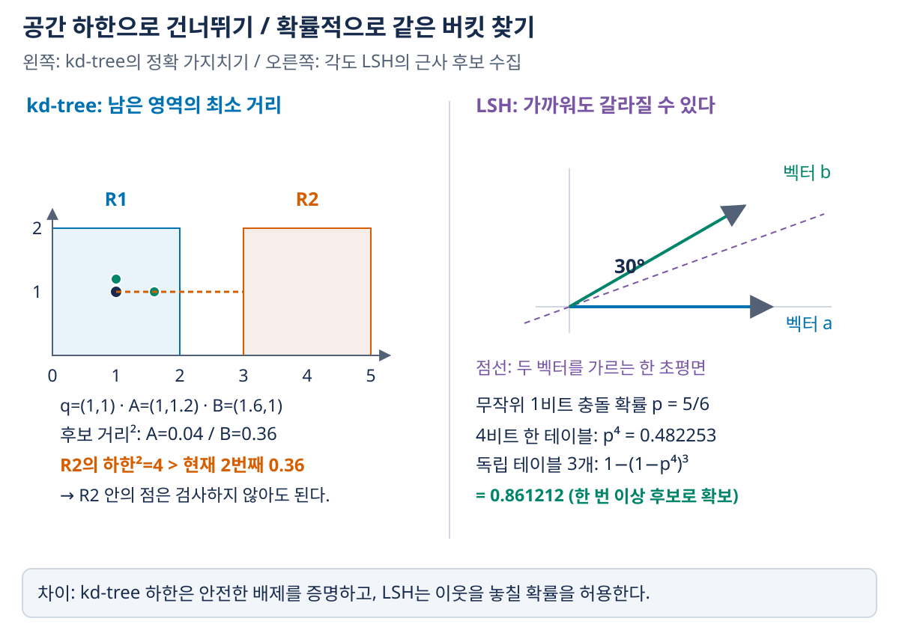
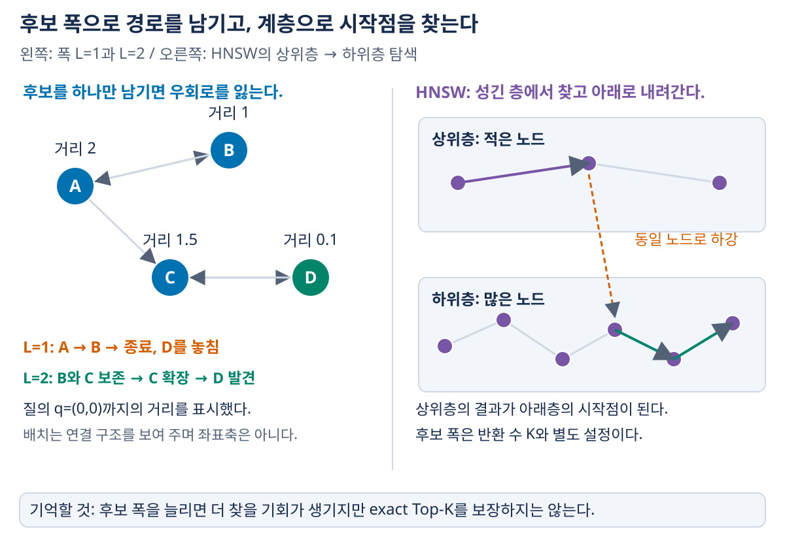

05. 벡터검색과 인덱스
이전: 신경검색과 검색기 학습 · 학습 안내 · 다음: RAG의 전체 구조
문서 벡터를 미리 만들었어도 매 질문마다 수백만 벡터를 모두 비교하면 비용이 든다. 벡터 인덱스는 유망한 후보를 적게 검사하면서 가까운 벡터를 찾기 위한 자료구조다. 이 장에서는 먼저 ‘가깝다’의 기준을 정하고, 정확 탐색의 하한 → 해시·군집 → 그래프 탐색으로 연결한다.
1. 입력·출력과 정확 검색
입력은 문서 벡터 행렬 $X\in\mathbb R^{N\times H}$, 질의 벡터 $\mathbf q\in\mathbb R^H$, 결과 수 $K$다. 출력은 선택한 거리·유사도 기준의 상위 K개 벡터 ID와 점수다. 문서 본문·메타데이터는 해당 ID로 다시 찾는다.
| 기준 | 점수 | 좋은 결과 |
|---|---|---|
| L2 거리 | $\lVert\mathbf q-\mathbf x\rVert_2$ | 작을수록 좋음 |
| L2 제곱 거리 | $\lVert\mathbf q-\mathbf x\rVert_2^2$ | 작을수록 좋음; L2와 순위 같음 |
| 내적 | $\mathbf q^\top\mathbf x$ | 클수록 좋음 |
| cosine | $\mathbf q^\top\mathbf x/(\lVert\mathbf q\rVert\lVert\mathbf x\rVert)$ | 클수록 좋음 |
모든 벡터를 비교하는 flat scan은 질의 하나에 $O(NH)$ 연산이 필요하다. 가속 하드웨어로 빠르게 할 수 있지만 검사 대상 수는 그대로다. 인덱스의 근사 오차를 측정할 때는 이 exact 결과가 기준이 된다.
정규화에 따라 순위가 달라진다
$\mathbf q=(1,0)$, $\mathbf a=(1,1)$, $\mathbf b=(3,0)$을 보자.
| 문서 벡터 | 내적 | cosine | L2 제곱 거리 |
|---|---|---|---|
| $\mathbf a$ | 1 | $1/\sqrt2\approx0.707107$ | 1 |
| $\mathbf b$ | 3 | 1 | 4 |
내적·cosine은 b를, L2는 a를 먼저 둔다. 모든 벡터를 단위 길이로 정규화하면 $\lVert\mathbf q-\mathbf x\rVert^2=2-2\mathbf q^\top\mathbf x$이므로 내적 최대·cosine 최대·L2 최소의 순위가 일치한다. 원래 벡터에서는 성립하지 않는다. 0벡터는 단위 정규화·cosine이 정의되지 않아 따로 처리한다.
모델을 학습할 때 쓴 점수와 인덱스의 거리 설정을 맞추는 것이 먼저다. 인덱스가 빠르게 찾아도 다른 기준의 이웃이면 원하는 검색이 아니다.
2. 정확도는 두 층에서 따로 평가한다
ANN(Approximate Nearest Neighbor)은 빠른 검색을 위해 exact Top-K를 일부 놓칠 수 있다. 여기서 인덱스 recall은 다음과 같이 정의할 수 있다.
Exact Top-5가 [A,B,C,D,E], ANN Top-5가 [A,B,C,F,G]이면 recall은 $3/5=0.6$이다. 여기서 정답은 벡터 거리 기준의 이웃이다. 사람이 관련 있다고 판정한 문서를 찾는 03장의 relevance recall과 다르다. 임베딩이 잘못된 문서를 가깝게 배치했다면 ANN recall=1이어도 실제 검색 품질이 낮을 수 있다.
비교할 때는 같은 벡터·거리·K·동점 규칙을 사용한다. 품질을 고정한 뒤 지연·처리량·메모리·구축 비용을 보거나, 같은 시간 예산에서 품질을 비교한다. 단순히 ‘인덱스 A가 더 빠르다’만으로는 탐색 범위를 줄여 정확도를 포기한 결과인지 알 수 없다.
3. kd-tree: 공간을 나누고 영역의 하한을 사용한다
kd-tree는 좌표축을 기준으로 공간을 재귀적으로 나눈다. 트리 노드는 점들이 들어 있는 영역을 나타낼 수 있고, 질의에서 영역까지의 최소 가능한 거리를 계산해 가까운 영역부터 탐색한다.
축 정렬 상자 $R=\prod_j[l_j,u_j]$에 대한 L2 제곱 거리 하한은 다음과 같다.
질의 좌표가 해당 축의 범위 안이면 그 축 기여는 0이다. 밖이면 가까운 경계까지의 거리다. 이것은 상자 안의 모든 점까지의 실제 거리 이하이므로 가지치기에 쓸 수 있다.
작은 탐색 예제
질의 $q=(1,1)$, K=2라고 하자. 왼쪽 영역 $R_1=[0,2]\times[0,2]$에는 A=(1,1.2), B=(1.6,1)이 있고, 오른쪽 영역 $R_2=[3,5]\times[0,2]$에는 다른 점들이 있다.
- $LB^2(q,R_1)=0$, $LB^2(q,R_2)=4$이므로 $R_1$을 먼저 검사한다.
- A·B의 실제 거리 제곱은 각각 0.04·0.36이다. 현재 K번째 후보 거리는 0.36이다.
- 남은 $R_2$의 어떤 점도 거리 제곱 4보다 가까울 수 없다. $4>0.36$이므로 $R_2$는 검사하지 않아도 현재 Top-2를 개선할 수 없다.
일반적인 branch-and-bound 형태는 다음과 같다.
미방문 영역: 거리 하한이 작은 순서의 min-priority queue
현재 결과: 실제 거리가 작은 K개를 유지하는 max-heap
영역 queue에서 최소 하한 영역을 꺼낸다.
결과 K개가 있고 그 하한이 현재 K번째 거리보다 크면 종료한다.
내부 영역이면 자식 영역의 하한을 넣는다.
실제 점을 검사하면 결과 heap을 갱신한다.
‘K개 점을 발견했다’만으로는 충분하지 않다. 아직 방문하지 않은 영역에 더 가까운 점이 있을 수 있다. 내부노드의 거리는 대표점까지의 거리 대신 영역의 유효한 하한으로 정의해야 정확 탐색의 논리가 성립한다. 대표점은 멀리 있어도 영역의 가장자리에는 가까운 점이 있을 수 있기 때문이다. 실제 점을 우선순위큐에서 거리순으로 직접 보고하는 변형도 모든 내부영역이 유효 하한을 가져, 다음으로 보고되는 점보다 가까운 미발견 점이 없음을 보장해야 한다.
높은 차원에서 어려워지는 이유
많은 축에서 질의와 겹치거나 가까운 영역이 늘면 거리 하한만으로 가지치기하기 어려워져 많은 영역을 방문한다. 이때 트리가 있어도 탐색이 선형 스캔에 가까워질 수 있다. 차원 수만으로 성능이 결정되는 것은 아니며 데이터의 실제 분포·유효 차원도 중요하다.
차원축소 역시 거리 보존 조건을 따져야 한다. PCA 등으로 차원을 줄이면 저장·검색 비용을 줄일 수 있지만 이웃 순서가 바뀔 수 있으므로 새 표현에서 평가해야 한다. 시각화 목적의 t-SNE를 원래 공간의 이웃 검색을 보존하는 일반적인 전처리로 곧바로 채택하지 않는다.
4. LSH: 가까운 벡터가 같은 버킷에 들어가게 한다
Cosine LSH의 한 방식은 원점을 지나는 무작위 hyperplane의 어느 쪽에 있는지로 1비트를 만든다.
$\mathbf r$는 초평면의 법선 벡터다. 여러 비트를 연결해 해시 키를 만들고, 같은 버킷의 점들을 후보로 얻은 뒤 원래 벡터 거리로 다시 점수화한다. 비트 경계에서 내적이 0인 경우 위 식은 1로 처리한다.
예를 들어 법선이 $(1,0),(0,1)$이면 $(1,0.1)$의 키는 11, 가까운 $(1,-0.1)$의 키는 10이다. 가까운 점도 경계 양쪽으로 갈라질 수 있다. 한 버킷만 찾는 방식의 recall 손실을 보여준다.
균등한 방향에서 뽑은 무작위 초평면 하나를 생각하면, 두 비영 벡터 사이 각도가 $\theta$일 때 같은 부호를 얻을 확률은 $p=1-\theta/\pi$다. 가까울수록 같은 버킷에 들어갈 가능성이 커진다. 이 각도 LSH의 근거는 Charikar의 원논문에서 확인할 수 있다.
비트 수와 테이블 수는 다른 방향으로 작용한다
독립 비트 $m$개를 모두 일치시켜야 한 테이블에서 충돌한다고 하면 확률은 $p^m$이다. 독립 테이블 $L$개 중 하나라도 충돌하면 후보로 쓰는 방식은 $1-(1-p^m)^L$이다.
| 벡터 각도 | 1비트 충돌 $p$ | 4비트 키 일치 | 독립 테이블 3개 중 한 번 이상 일치 |
|---|---|---|---|
| 30도 | $5/6$ | 0.482253 | 0.861212 |
| 90도 | $1/2$ | 0.0625 | 0.176025 |

그림 읽기: 왼쪽은 실제 좌표 공간이다. q에서 R2의 가장 가까운 경계까지 거리 2, 제곱 4가 하한이며, 이미 찾은 두 번째 점의 제곱 거리 0.36보다 크므로 R2를 배제한다. 오른쪽은 각도 30도 벡터가 한 초평면에 의해 갈라지는 사례와 무작위 해싱의 확률이다. 그려진 한 초평면에서의 결과와 무작위 초평면 분포에 대한 확률은 다른 개념이다. 왼쪽은 남은 영역을 배제할 수 있음을 증명하고, 오른쪽은 recall 손실을 허용하며 후보를 모은다.
- 한 키의 비트를 늘리면 버킷이 세분화되어 후보가 줄지만 가까운 점도 함께 놓치기 쉽다.
- 테이블을 늘리면 놓친 점을 다른 테이블에서 찾을 확률이 커지지만 저장량·조회·후보 수가 증가한다.
- 인접 버킷도 조회하면 recall을 높일 수 있지만 후보 검사 비용이 늘어난다.
여기서는 유사한 점의 충돌 자체가 목적이다. 충돌을 모두 없애려는 일반 해시 자료구조의 관점과 다르다. 단순히 무작위 초평면을 여러 개 그린다고 데이터가 같은 개수씩 균등하게 분할되는 것도 아니다.
5. IVF와 양자화: 검색할 영역과 저장할 표현을 줄인다
IVF(Inverted File)는 벡터 공간을 대표 중심점들로 나누고, 각 중심에 속한 벡터 ID 목록을 저장하는 방식이다. term별 posting list인 텍스트 역색인과 어떤 키가 목록을 가리키는지가 다르다.
구축: 문서 벡터 → 가까운 중심에 배정 → 중심별 목록에 저장
검색: 질문 벡터 → 가까운 중심 몇 개 선택 → 해당 목록의 벡터 비교
보통 nlist는 전체 목록 수, nprobe는 질의에서 방문할 목록 수다. 적은 목록만 보면 빠르지만 정답 벡터가 다른 목록에 있으면 놓친다. Faiss의 공식 인덱스 설명은 이 실패 조건과 파라미터 역할을 설명한다.
경계에서 놓치는 예
설명을 위해 중심 $c_1=(0,0),c_2=(10,0)$이 정해져 있다고 하자. 문서 A=(0,0)는 첫 목록, B=(5.1,0)는 둘째 목록에 배정된다. 질의 $q=(4.9,0)$는 중심까지 거리가 4.9·5.1이므로 첫 목록을 먼저 고른다.
nprobe=1이면 A만 보아 거리 4.9를 반환하지만, 실제 최근접 B의 거리는 0.2다. nprobe=2이면 두 목록을 검사해 B를 찾는다. 질의에 가장 가까운 중심이 실제 최근접 문서가 속한 중심과 같을 필요는 없다. 이 예제의 중심은 기하를 설명하기 위한 지정값이며 이 두 문서만으로 k-means를 학습한 결과라는 뜻은 아니다.
PQ는 검색 범위 축소와 별개의 압축이다
Product Quantization(PQ)은 벡터를 여러 부분벡터로 나누고, 각 부분을 가장 가까운 codeword의 번호로 저장한다. 질의에서는 미리 계산한 작은 거리표를 더해 압축 벡터의 근사 거리를 빠르게 얻을 수 있다. 압축으로 거리 오차가 생겨 순위가 바뀔 수 있다. IVF와 함께 쓰면 어떤 목록을 보았는가와 벡터를 얼마나 정확히 표현했는가 두 오차 원인이 생긴다.
float32 768차원 벡터는 원본 좌표만 3,072바이트다. 100만 개면 3,072,000,000바이트, 약 3.072GB(2.861GiB)다. 96개 부분벡터에 각각 8비트 codeword ID를 저장하는 예에서는 벡터 코드가 96바이트여서 원본 좌표 대비 32배 작다. 다만 실제 인덱스에는 문서 ID·codebook·목록·그래프·메타데이터가 추가되므로 DB 전체가 정확히 32배 작아지는 것은 아니다.
6. 그래프 검색: 가까운 이웃을 따라 유망한 곳으로 이동한다
벡터 하나를 노드로 보고 일부 이웃을 간선으로 연결한다. 질의와 가까운 시작점에서 이웃들의 거리를 계산하고 더 유망한 후보를 방문한다. 모든 점을 직접 비교하지 않고 경로를 따라간다.
가장 가까운 현재 후보 하나만 남기는 greedy search는 빠르지만 국소 최솟값에 갇힐 수 있다. 여러 후보를 유지하면 당장은 덜 가까운 경로도 탐색해 더 좋은 결과를 찾을 수 있다.
후보 폭의 효과를 작은 그래프로 읽기
질의 $q=(0,0)$이고 노드 거리·간선이 다음과 같다고 하자.
A=(2,0), 거리 2 A → B, C
B=(1,0), 거리 1 B → A
C=(0,1.5), 거리 1.5 C → D
D=(0,0.1), 거리 0.1 D → C
A의 이웃 B·C를 보았을 때 greedy는 B만 남긴다. B에서 더 가까워지는 이웃이 없으면 멈춰 D를 놓친다. 후보를 두 개 유지하면 B를 검사한 뒤 C도 펼칠 수 있고 C를 통해 D에 도달한다. 정답 D가 처음부터 후보에 있던 것이 아니라, 덜 가까운 C를 보존해서 찾았다. 후보 폭을 늘리는 것은 더 좋은 결과를 찾을 기회를 주지만 특정 폭만으로 exact를 보장하지 않는다.
그래프 탐색의 자료구조는 보통 거리순 후보 목록, 방문·검사 여부, 현재 좋은 결과를 담는 구조로 나뉜다. 발견됨과 이웃까지 확장함을 구분해야 같은 노드를 반복 처리하거나 조기 종료하는 오류를 피할 수 있다. 알고리즘의 pseudo-code 표기가 달라도 이 역할과 종료 조건을 비교해서 읽어야 한다.
그래프 구축과 질의 탐색은 다른 작업이다
그래프의 간선을 만드는 구축에는 두 방향이 있다. Incremental 방식은 현재 그래프에 새 점을 추가하면서 연결할 이웃을 찾고 간선을 조정한다. Refinement 방식은 무작위 그래프나 근사 k-NN 그래프 같은 초기 연결을 만든 뒤, 간선을 추가·가지치기하며 반복 개선한다. 둘 모두 질의 때 이동할 경로를 준비하는 작업이며, 질의 검색 도중 모든 간선을 새로 학습한다는 뜻은 아니다. 삭제·갱신 처리와 구축 품질은 실제 구현별로 확인해야 한다.
후보·발견·확장과 종료를 의사코드로 구분하기
아래는 폭 L의 후보 목록을 유지하는 한 변형이다. HNSW 등 모든 그래프 검색의 공통 코드를 뜻하지 않는다. seen은 거리 계산을 위해 발견한 노드, expanded는 이웃까지 살핀 노드다. 알고리즘마다 visited·checked를 다르게 부르므로 이름보다 갱신하는 순간을 본다.
입력: 그래프 G, 질문 벡터 q, 시작 노드 s, 후보 폭 L, 반환 수 K≤L
C = {s} # q까지 거리로 정렬해 가까운 L개만 유지
seen = {s} # 이미 발견·거리 계산한 노드
expanded = {} # 이웃을 확장한 노드
while C 안에 expanded가 아닌 노드가 있다:
u = C 안에서 아직 확장하지 않은 가장 가까운 노드
expanded에 u 추가
for v in G의 u 이웃:
if v가 seen에 없다:
seen에 v 추가
q와 v의 거리 계산
C에 v 추가
C를 거리순으로 정렬하고 가까운 L개만 남김
C에서 가까운 min(K, C의 크기)개 반환
종료는 현재 유지하는 후보가 모두 확장되었다는 조건이다. 전체 그래프의 노드를 모두 살폈다는 의미가 아니다. 폭 때문에 탈락한 노드의 이웃은 확장하지 않을 수 있고, 그쪽에 정답이 숨어 있을 수 있으므로 근사 검색이다. 위 A→B·C 예에서 L=1이면 C가 탈락하지만 L=2이면 C를 확장해 D를 발견한다. 시작점이 속한 연결 성분이 작아 K개보다 적게 발견되었다면 부족한 개수와 상태를 반환해야 한다. K≤L만으로 결과 K개를 보장하지 않는다. 후보 저장 방식·방문 용어·종료 조건 차이를 이해할 때 이 상태 변화를 함께 추적한다.
7. 좋은 그래프는 가깝게 연결하는 것만으로 충분하지 않다
거리 비교 하나가 $O(H)$이므로 실제 연산은 검사한 노드·간선 수와 관계가 있다. 간선이 너무 많으면 매 단계 비교 비용·저장량이 늘고, 너무 적으면 연결이 끊기거나 경로가 길어진다. 일부 긴 간선은 멀리 이동하는 지름길이 된다.
| 기반 그래프 관점 | 장점 | 검색용으로 그대로 쓰기 어려운 점 |
|---|---|---|
| Delaunay 관계 | 기하적 이웃 이동의 기반 | 높은 차원에서는 간선·구축 비용이 커질 수 있음 |
| k-NN graph | 이웃 수를 제한하기 쉬움 | 가까운 집단끼리만 연결돼 전체 연결성을 잃을 수 있음 |
| MST | 전체 연결성과 적은 간선 | 지름길이 부족해 경로가 길어질 수 있음 |
| Relative Neighborhood Graph(RNG) | 중복 방향의 간선을 줄이는 관점 | 정확한 구성 자체가 비쌀 수 있어 근사·변형 사용 |
RNG의 기하 조건은 두 점 A·C 사이의 거리보다 A와 C 양쪽 모두에 더 가까운 제3의 점이 있으면 A–C 간선이 중복일 수 있다는 것이다. 실제 ANN의 이웃 선택은 이를 변형한 휴리스틱을 사용하기도 하므로 동일 알고리즘으로 단정하지 않는다.
작은 예로 A=(0,0), 이미 선택한 B=(1,0), 후보 C=(2,0), D=(0,2)를 보자. C는 $d(B,C)=1<d(A,C)=2$이므로 B 방향의 중복 후보로 제외할 수 있다. D는 $d(B,D)=\sqrt5>d(A,D)=2$여서 다른 방향 후보로 남는다. 이런 다양성 선택은 무조건 가까운 K개만 연결하는 것과 다르며, 작은 각도의 중복 간선 대신 다른 영역으로 갈 통로를 확보하려는 것이다.
8. HNSW와 다른 그래프 계열의 위치
HNSW는 같은 점 일부가 여러 층에 포함되는 계층 그래프를 만든다. 위층의 성긴 그래프에서 멀리 이동하고, 아래층으로 내려가 더 촘촘한 이웃을 탐색한다. 위층 탐색의 결과가 아래층의 시작점이 된다. 무작위 층 배정과 계층 탐색은 HNSW 원논문에 설명되어 있다.
상위층: 적은 노드·큰 이동 시작 → 유망한 위치
↓ 같은 노드
하위층: 더 많은 노드·세부 탐색 후보 확장 → Top-K

그림 읽기: 왼쪽에서 A의 이웃 B·C를 본 뒤 L=1이면 B만 남고, L=2이면 C를 통해 더 가까운 D로 갈 가능성이 남는다. 노드 옆 숫자는 q까지의 실제 거리이며 화면 배치는 연결 관계만 나타낸다. 오른쪽에서는 위층에서 얻은 유망한 노드와 같은 노드의 아래층 위치로 내려간 뒤 후보를 넓힌다. 이 계층 구조와 후보 폭은 서로 다른 장치이며, 그림의 화살표를 모든 HNSW 구현의 세부 경로로 해석하지 않는다.
이웃 수 관련 $M$, 구축 시 탐색 폭, 질의 시 탐색 폭은 서로 다른 역할이다. 질의 시 탐색 폭을 늘리면 더 많은 후보를 검사해 recall을 높일 수 있지만 지연도 늘어난다. 이웃 수를 늘리면 저장·구축·탐색 비용이 달라진다. 논문·구현마다 정확한 파라미터 규약이 다르므로 ‘탐색 폭=최종 반환 K’로 읽지 않는다.
| 그래프 검색 계열 | 핵심 위치 | 구별할 점 |
|---|---|---|
| HNSW | 계층 그래프와 이웃 선택으로 탐색 경로 개선 | 계층과 후보 탐색 폭이 모두 중요 |
| NSG | 그래프의 탐색 경로·연결성과 간선 선택을 다루는 ANN | 특정 실험의 HNSW 대비 우열을 보편화하지 않음 |
| NGT | 그래프와 트리 구조를 결합한 이웃 탐색 계열 | tree를 시작 후보 확보에 활용하는 맥락 |
| Vamana·DiskANN | Vamana는 그래프 구성·탐색 알고리즘, DiskANN은 이를 이용하는 저장장치 친화 검색 시스템 맥락 | 알고리즘과 시스템을 동일 이름으로 혼동하지 않음 |
이 표는 계열별 역할을 구별하는 수준이다. 모든 구현의 정확한 경계 조건·갱신 규칙·복잡도 증명을 대신하지 않는다. 어느 계열이 현재 최고인지, 특정 구현이 어떤 기능과 속도를 제공하는지는 판본·환경에 따라 달라지므로 동일한 데이터와 조건으로 비교해야 한다.
9. 알고리즘·라이브러리·벡터 DB는 다른 층이다
같은 검색 시스템도 다음 세 층으로 나눠 보아야 한다.
- 알고리즘: Flat, IVF, PQ, HNSW 등 탐색·압축 방법.
- 라이브러리: 알고리즘의 구현과 검색 연산. 한 라이브러리가 여러 인덱스를 제공할 수 있다.
- 벡터 DB·서비스: 검색에 저장·메타데이터·필터·갱신·동시성·운영 기능을 더한 시스템.
따라서 ‘Faiss를 평가했다’보다 ‘어떤 거리의 어떤 인덱스·파라미터를 같은 데이터에서 평가했다’가 정확하다. 벡터 DB 이름만으로 실제 검색 알고리즘이나 품질을 알 수 없다.
실제 RAG에서는 삭제·갱신·권한 필터도 중요하다. 검색 후 필터링은 후보가 많이 제거되어 K개를 채우지 못할 수 있고, 필터 적용 순서·인덱스 구조는 recall과 지연을 바꾼다. 또 문서 encoder를 바꾸면 기존 벡터와 새 질문 벡터의 공간이 달라져 재임베딩·재인덱싱이 필요할 수 있다.
10. 확인 질문과 해설
- 정확한 벡터 Top-5와 일치하는 결과를 반환하면 질문에 관련 있는 문서를 반드시 찾은 것인가?
- kd-tree에서 K개 후보가 생긴 즉시 끝내면 안 되는 이유는 무엇인가?
- LSH에서 비트 수와 테이블 수를 늘리는 효과는 같은가?
- IVF의 가장 가까운 중심 하나만 보면 실제 최근접 점을 놓칠 수 있는가?
- 그래프 이웃을 가장 가까운 점 몇 개로만 고르면 어떤 위험이 있는가?
학습용 해설
- 아니다. 인덱스는 임베딩 거리 기준을 정확히 따른 것이고, 그 임베딩이 관련성을 잘 반영하는지는 별도 평가다.
- 미방문 영역에 더 가까운 점이 있을 수 있다. 영역의 거리 하한이 현재 K번째 후보를 개선할 수 없는지 확인해야 한다.
- 다르다. 한 테이블의 비트를 늘리면 충돌·후보가 줄고 recall도 줄 수 있다. 독립 테이블을 늘리면 후보를 회수할 기회·저장량·조회 비용이 늘어난다.
- 가능하다. 질의와 정답 점이 중심 간 경계 양쪽에 아주 가깝게 놓일 수 있다. 본문의 4.9·5.1 예가 해당한다.
- 가까운 점 집단 안의 연결만 남아 다른 집단으로 가는 통로가 사라질 수 있다. 간선 수·방향 다양성·연결성·지름길을 함께 설계한다.
그림으로 복습하기
- kd-tree·LSH 비교 그림에서 안전한 배제 조건과 확률적 후보 확보를 구별한다.
- 그래프·HNSW 그림에서 후보 폭과 계층의 역할을 각각 설명한다.
- 인덱스는 선택한 벡터 거리를 빠르게 탐색하는 수단이다. 임베딩의 의미 적합성, 근사 검색 오차, 문서 버전·권한 조건을 각각 따로 확인해야 한다.